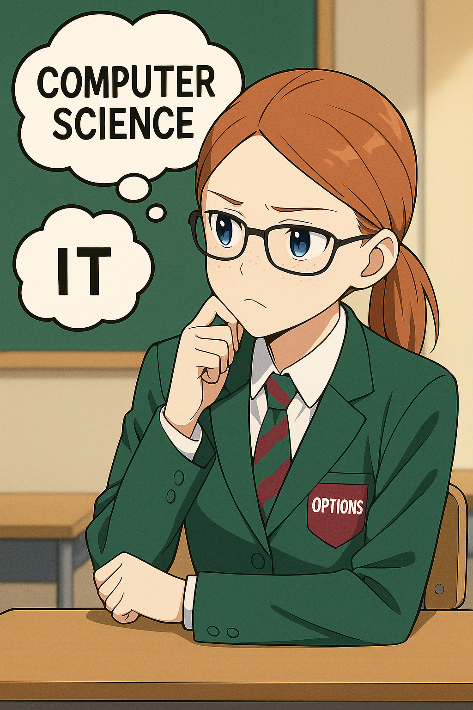

Do Now

Match each statement to Computer Science or IT.
1. Designs and builds programs.
Computer Science
Computer Science
2. Uses software to analyse business data.
IT
IT
3. Understands algorithms and logic.
Computer Science
Computer Science
4. Creates digital graphics or presentations.
IT
IT
What you’ll learn today
By the end of this lesson, you will be able to:
- Understand what Computer Science and IT mean.
- Spot real examples of each in everyday life.
- Think about which one suits you best.
How you’ll know you’ve got it:
- Explain the difference between making technology and using technology.
- Name one job for each subject.
- Say which subject you prefer and why.
Key Vocabulary
- Algorithm
- A step-by-step set of instructions to solve a problem.
- Program
- A series of instructions a computer can execute.
- Hardware
- The physical components of a computer.
- Software
- The applications and programs used on a computer.
- Data
- Information processed or stored by a computer.
Activities
- Classify cards (CS vs IT): Sort 12 task cards into CS, IT or Overlap – justify one tricky card.
- Mini-algorithm: Write 6 steps for an everyday task and debug with a partner.
- Exit sentence: “CS is about …, IT is about …, they overlap when …”.
Plenary
Cold-call: pick one task from today and explain whether it’s CS, IT or Overlap (with a reason).
Show All
This view expands all sections for printing or PDF export.